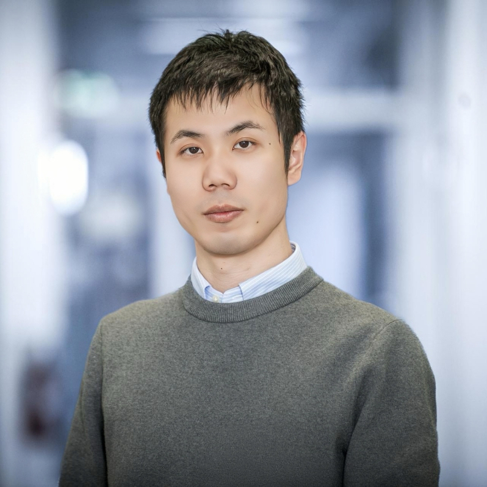
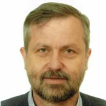
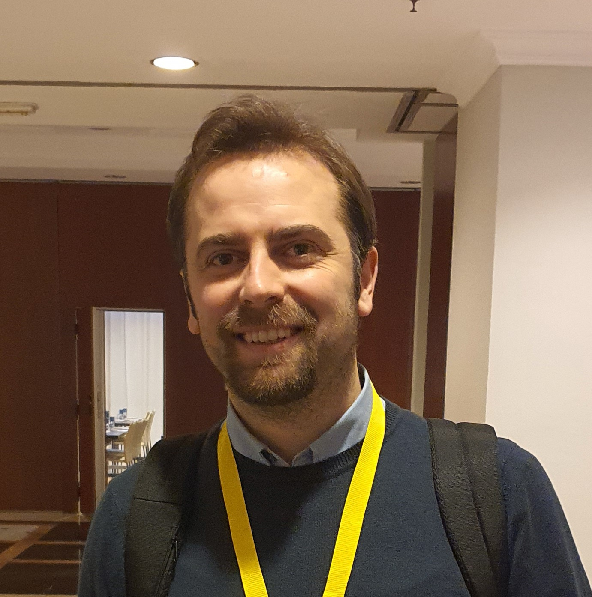
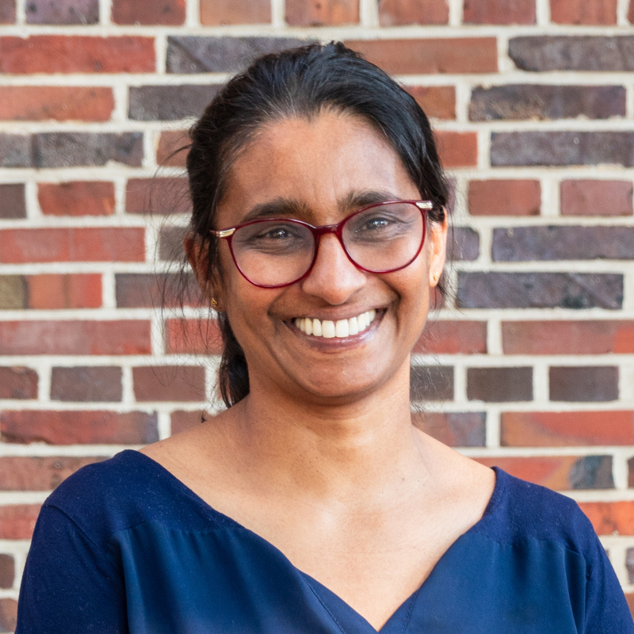
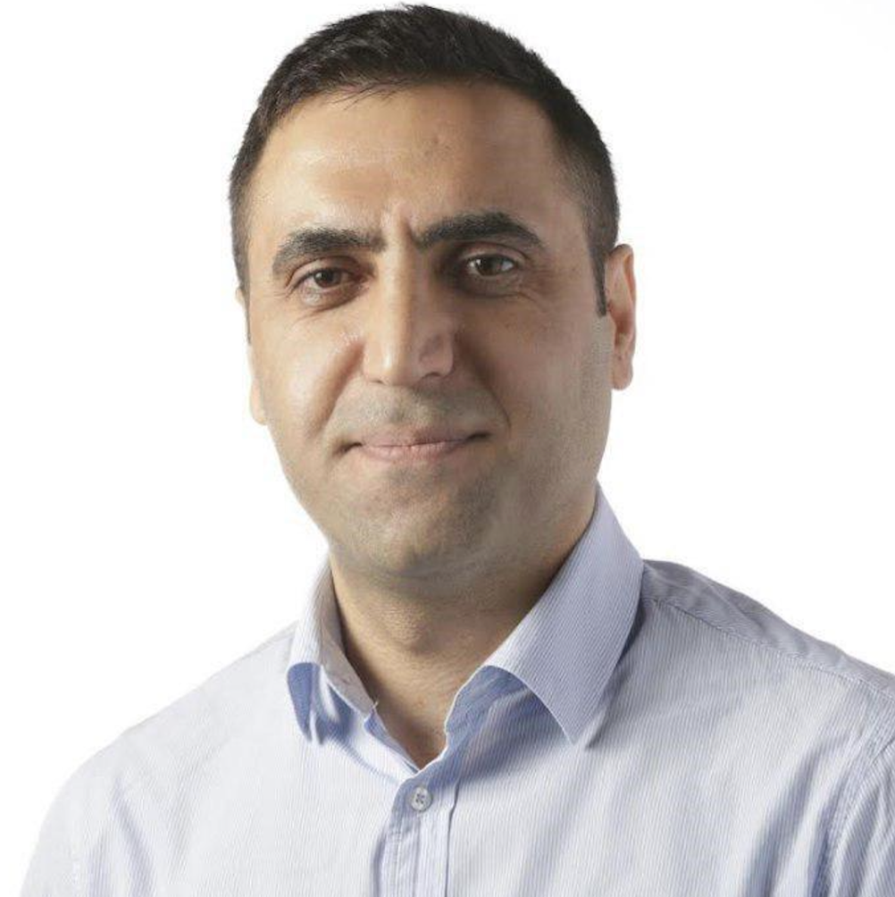

ABOUT
The premature aging of IoT systems is one of the most challenging topics that need to be addressed to enable widespread usage. Both hardware and the software that is deployed on devices from small sensor nodes to edge devices or the cloud need to be considered holistically, such that deployment lifetimes can be counted in decades not years. With ever changing communication protocols, company-specific software platforms and quickly deprecated hardware components, IoT is at the forefront of uncertain futures, and these technical challenges need to be solved for a sustainable future. In this workshop, we focus on issues arising from the brittle nature of current IoT systems.
CALL FOR PAPERS
The papers of this workshop should highlight approaches, ideas, and concepts in the field of longevity of Internet of Things systems. The main outcome of the workshop is to share the current progress in research and industry, as well as establish a community, dedicated to improve the longevity and sustainability of IoT systems.
The main topics of interests include (but are not limited to):
- Digital Twins for improved longevity
- Sovereign AI/ML for longevity (local TLMs and SLMs)
- Repairable/Maintainable software and hardware design
- Batteryless computing
- Retrofitting features and security
- Serverless/Computing continuum
- Sustainable computing paradigms and architectures
- Aging AI models
- Continuous and lifelong learning
- Flexible and adaptive deployments
- Protocol maintenance
- Real-world examples and case studies
- Software design patterns for sustainable/robust IoT
- Software update planning
We invite researchers, practitioners, and industry experts to submit original contributions addressing these topics or related areas. Join us in exploring innovative solutions and fostering discussions to shape the future of sustainable IoT systems.
Accepted papers will be published in companion proceedings to the conference’s main proceedings (ACM International Conference Proceedings Series (ICPS)).
Important Dates*
* All dates are AoE.
SUBMISSION GUIDELINES
Regular papers should present novel perspectives within the scope of the workshop. Papers must be in PDF format and contain 6-8 pages maximum (including references). Papers should not contain names and affiliations of the authors (double-blinded review process). All papers must be typeset in the official ACM Primary Article Template. Submissions must be made via EasyChair. The LaTeX templates, as well as related information, can be found at the ACM website (or at Overleaf).
LongevIoT will be held in conjunction with IoT 2026. At least one author will be required to present the paper during the workshop (only in-person allowed) and has to have a full registration at the conference (visit the conference's website for more details on the registration).
Submission link: TBD
REGISTRATION
Each accepted workshop paper requires at least one full conference registration. Otherwise, the paper will be withdrawn from publication. The authors of all accepted papers must guarantee that their paper will be presented at the workshop. Papers not presented at the workshop will be considered as a "no-show" and it will not be included in the proceedings.
Please reach out to the workshop organizers if you require an invitation letter.
Registration link: here
COMMITTEES
Organizing Committee

Boris Sedlak TU Wien

Malte Josten University of Duisburg-Essen

Peter Zdankin University of Duisburg-Essen
Technical Program Committee

Chao Qian University of Duisburg-Essen

Eirini E. Tsiropoulou Arizona State University

Ella Peltonen University of Oulu

Gerhard Fohler University of Kaiserslautern

Ilir Murturi University of Pristina

Jan Rellermeyer Leibniz Universität Hannover

Koojana Kuladinithi TU Hamburg

Lorenz Schwittmann Independent Researcher

Marco Picone Università di Modena e Reggio Emilia

Naser H. Motlagh University of Helsinki

Stephan Sigg Aalto University

Suzan Bayhan University of Twente

Torben Weis University of Duisburg-Essen

Victor Pujol Universitat Pompeu Fabra